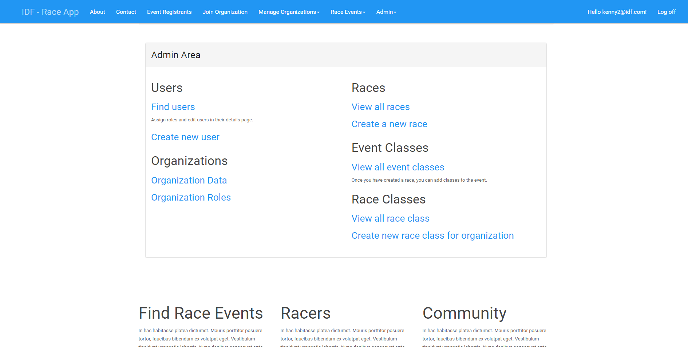
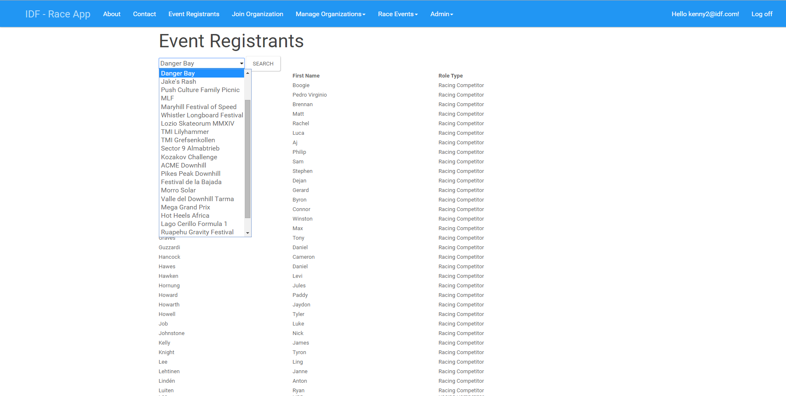
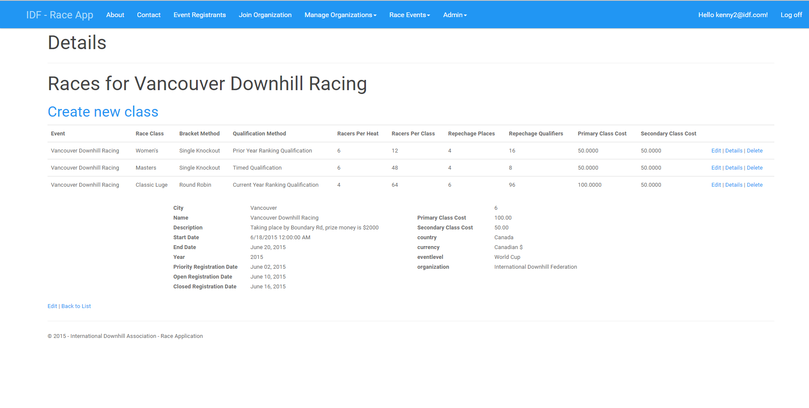
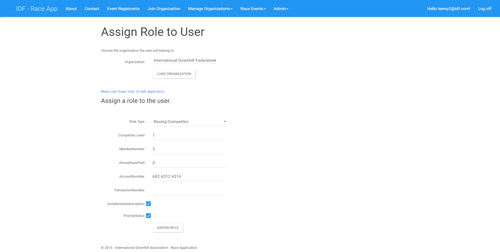
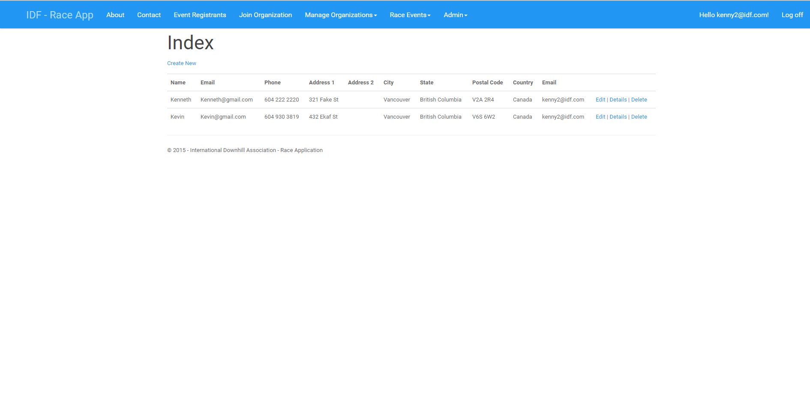

The International Downhill Federation Race Application is a web application that I have developed along with my team (Le Hagen Daz Boiz) for our COMP 4900 Computer Projects 2 course. Our client had a proof of concept application for International Downhill Federation (IDF). Currently at race events held by IDF, there is always a race administrator present at the events to record the results of the races. The race administrator holds on to a laptop that contains a windows desktop application and manually enters the results that is stored into a local database on the machine. Later on, the data from the races has to be manually entered on to the IDF website that will display the results for people around the world to see.
We (Le Hagen Daz Boiz) proposed to develop a web application that will contain the same functionalities as the windows application. Users of the application with out login credentials are able to view event registrants. Users with login credentials are able to view event registrants as well as joining organizations. Race administrator's are able create race events, manage organizations, create personnel for the organizations. SuperUsers who oversees the application as a whole and has the ability to do everything that the admin can do as well as creating new race organization.
This application was built with ASP.NET MVC, EntityFramework, MySQL, and LINQ.
Main menu for race administrators.
Event Registrants page that displays all registrants for a given event.
Race Event page that allows race administrators to manage races for an event.
Organization Management page that allows organization administrators to assign roles and remove roles.
Emergency Contact page that allows user to manage their emergency contact information.
